01 SKETCH
손으로 그린 러프 스케치
→
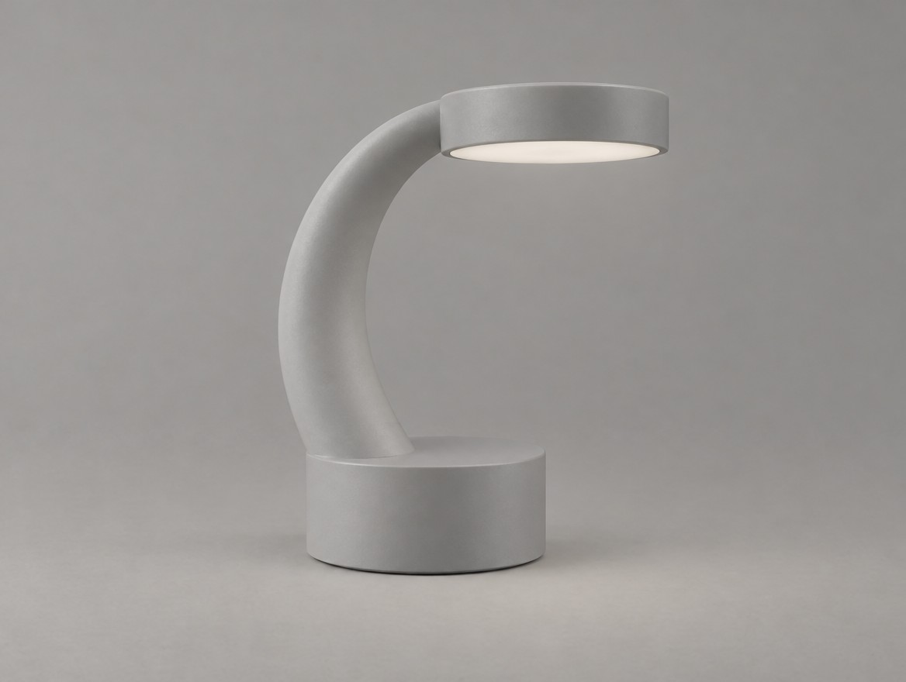
02 FIRST AI RENDER
AI가 생성한 초기 제품 렌더
→

03 REFINED CONCEPT
수정 후 완성도가 높아진 콘셉트
Week 01 — Online · AI × Industrial Design
SKETCH TO CONCEPT
From Rough Sketch to AI Product Visualization
내가 그린 아이디어를 AI로 시각화하고, 디자인 의도에 맞게 수정한다.
PART 01 — AI Visualization
오늘 우리는 무엇을 만들까?
Your Sketch. Your Concept.

01
ROUGH SKETCH
내 스케치
02
PREPARE
입력 준비
03
GENERATE
렌더 생성
04
DIRECT
레퍼런스 지시
05
EDIT
부분 수정
06
EXPLORE
방향 탐색
07
SELECT
콘셉트 선택
RESULT
Selected Concept
다음 주에 발전시킬 안
목표는 멋진 제품 이미지 한 장이 아니다.
원래 스케치의 의도를 유지하며 시각화하고, AI 결과를 평가하고, 필요한 수정을 직접 지시한다.
2
PART 01 — AI Visualization
AI는 스케치를 어떻게 해석할까?
Does AI understand your design?
AI는 스케치를 입력받아 제품처럼 보이는 이미지를 만들 수 있지만, 스케치 속 모든 형태와 기능을 정확히 이해한다고 보장할 수 없다.
AI가 추정하거나 임의로 보완하는 것
· 스케치에 표현되지 않은 뒷면
· 실제로 연결되지 않은 구조
· 불분명한 소재와 마감
· 제품의 실제 크기와 비율
· 의도하지 않은 장식 요소
AI generates an interpretation,
not a verified design.
INPUT · 같은 러프 스케치 한 장
A · B · C는 모두 이 스케치에서 출발했다.
결과가 달라진 것은 AI의 해석이 달랐기 때문이다.
A · 원본에 비교적 충실
곡선 지지대 1개 · 디스크 헤드 · 원통 베이스가 유지됨
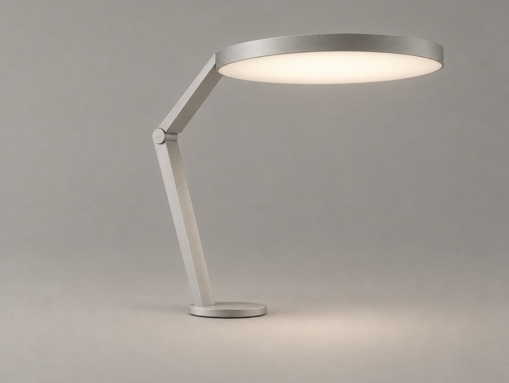
B · 구조와 비율이 바뀜
곡선 지지대가 꺾인 2단 암으로, 헤드는 커짐
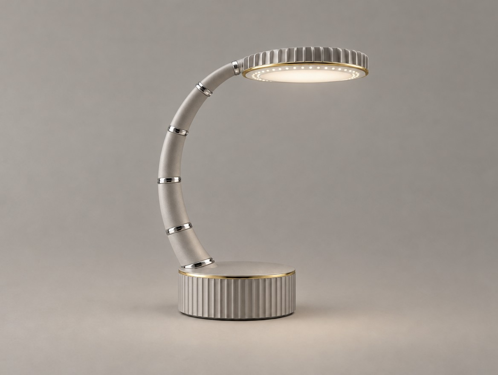
C · 장식 요소 추가
스케치에 없는 링 · 핀 · 주름 패턴이 붙음
3
PART 01 — AI Visualization
좋은 이미지와 좋은 디자인은 다르다
GOOD IMAGE ≠ GOOD DESIGN
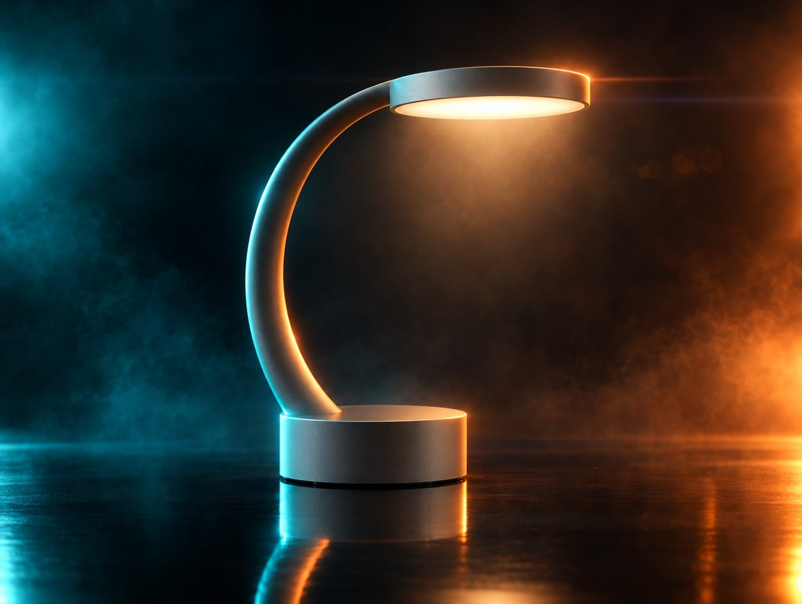
GOOD IMAGE
· 조명이 아름답다
· 재질 표현이 사실적이다
· 배경이 세련됐다
· 사진처럼 보인다
GOOD DESIGN
· 원래 의도가 유지된다
· 형태와 기능이 일치한다
· 사용자가 이해할 수 있다
· 구조와 비율이 설득력 있다
4
02
Week 01 Online · Sketch Preparation
BEFORE YOU GENERATE
AI에 전달할 입력 자료 준비하기
좋은 결과를 얻으려면 먼저 AI가 참고할 자료를 정리해야 합니다.
PART 02 — Sketch Preparation
PREPARATION KIT
오늘 필요한 준비물
PRODUCT
휴대용 무선 테이블 램프
USER
작은 공간에서 독서 · 작업하는 사용자
PROBLEM
조명을 필요한 곳으로 옮기기 어렵다
01
DESIGN BRIEF
무엇을 만들고 왜 만드는가?
02
ROUGH SKETCH
제품의 기본 형태를 표현한 스케치
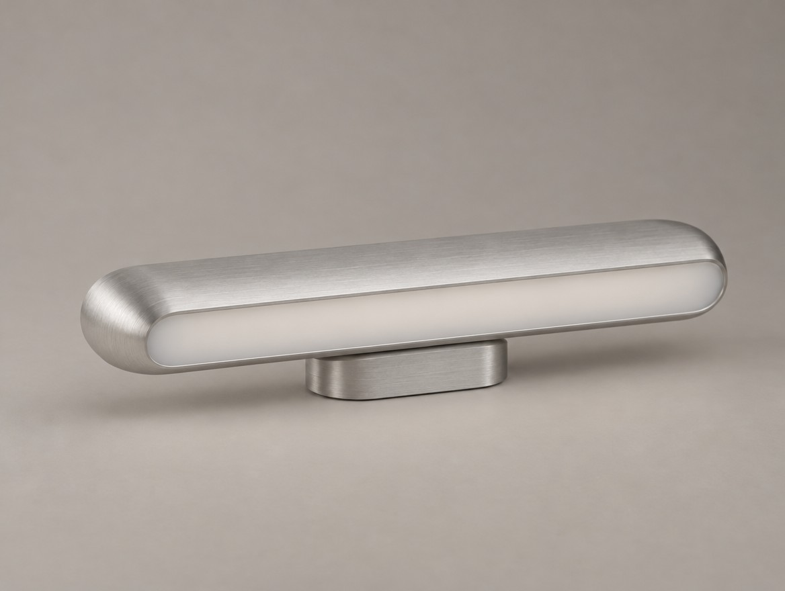
FORM · CMF · DETAIL · CONTEXT
03
REFERENCE BOARD
형태 · 소재 · 디테일 · 사용 환경 레퍼런스
KEEP 01
곡선형 지지대
KEEP 02
디스크형 헤드
KEEP 03
전체 비례
04
DESIGN INTENT
반드시 유지해야 하는 디자인 특징
6
PART 02 — Sketch Preparation
INPUT QUALITY
어떤 스케치가 AI에 적합할까?
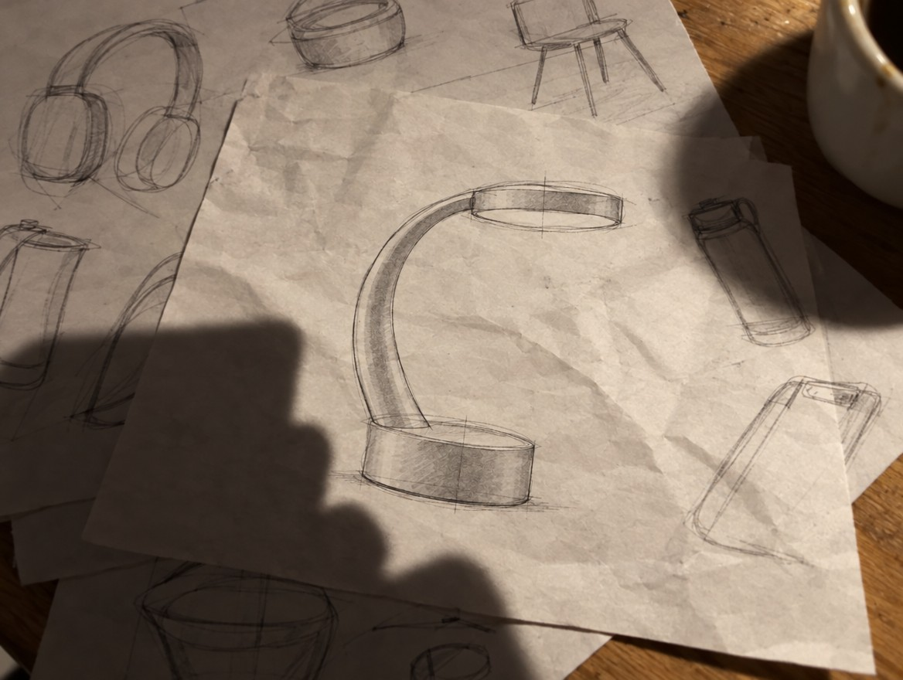
POOR INPUT
· 여러 제품이 한 화면에 복잡하게 섞여 있음
· 스케치가 흐릿하거나 그림자가 심함
· 제품 외곽선이 잘 보이지 않음
· 어떤 부분이 중요한지 알 수 없음
BETTER INPUT
· 제품 하나가 명확하게 보임
· 실루엣과 주요 부품이 구분됨
· 충분한 대비와 해상도
· 필요한 부분에 간단한 주석이 있음
7
PART 02 — Sketch Preparation
② 곡선형 지지대
① 원통형 베이스
③ 디스크형 헤드
④ 지지대 · 헤드 연결부
⑤ 헤드 아래 조명 영역
스케치에서 무엇을 읽어야 할까?
What must remain?
SILHOUETTE
제품의 전체 외곽 형태
PROPORTION
주요 부분의 상대적 크기
STRUCTURE
각 부분이 연결되는 방식
FUNCTION
사용을 위해 필요한 형태
SIGNATURE FEATURE
제품을 구분하는 핵심 특징
8
PART 02 — Sketch Preparation
DESIGN INTENT
Describe the intention, not just the appearance.
제품 · 휴대용 무선 테이블 램프
USER
작은 공간에서 독서하거나 작업하는 사용자
PURPOSE
필요한 곳으로 쉽게 이동할 수 있는 조명
FORM
부드러운 곡선형 지지대와 얇은 조명 헤드
FEATURE
컴팩트한 베이스와 간결한 실루엣
KEEP
곡선형 지지대, 디스크형 헤드, 전체 비례
학생 활동
자신의 제품에 대해 위 항목을 한두 문장씩 작성합니다.
9
Practice 01
Prepare Your Sketch
AI에 입력할 스케치와 디자인 의도를 준비합니다.
학생 실습
1. 러프 스케치 중 하나를 선택
2. 선명하게 촬영하거나 스캔
3. 제품의 핵심 형태 3개 표시
4. 반드시 유지할 특징 3개 작성
5. 용도와 사용자를 한 문장으로 설명
실습 결과물
Sketch Image + Design Intent
강사 확인 기준
AI에 입력할 이미지와
텍스트 설명을 모두 준비했는가
10
03
Week 01 Online · Sketch to Render
FROM LINES TO PRODUCT
Sketch → Render
러프 스케치를 제품의 형태와 소재가 읽히는 이미지로 발전시킵니다.
PART 03 — Sketch to Render
DEMO · 강사 시연
스케치만 전달하면 어떻게 될까?
INPUT
같은 스케치 · 같은 시점과 배경
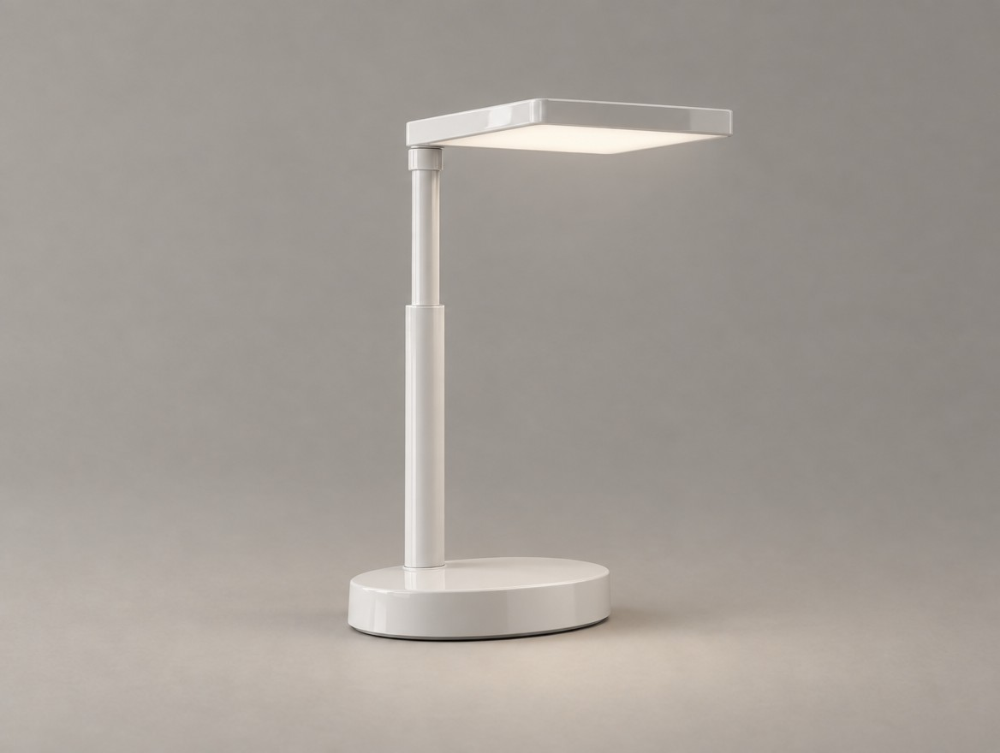
FORM DRIFT
A · 스케치만 입력
AI가 자유롭게 해석 — 직선 기둥과 사각 헤드로 바뀜
KEPT
B · 스케치 + 디자인 설명
곡선 지지대 · 디스크 헤드 · 원통 베이스 유지
비교 질문
· 어느 쪽이 원본 실루엣을 더 잘 유지했는가?
· 제품의 기능이 제대로 표현되었는가?
· AI가 임의로 추가한 요소가 있는가?
· 어느 결과가 다음 수정에 적합한가?
12
PART 03 — Sketch to Render
제품 이미지 생성에 필요한 정보
PRODUCT VISUALIZATION PROMPT
01
PRODUCT INFO
PRODUCT
어떤 제품인가?
02
PRODUCT INFO
PURPOSE
어떤 용도로 사용하는가?
03
PRODUCT INFO
FORM
어떤 형태인가?
04
PRODUCT INFO
STRUCTURE
각 부분이 어떻게 연결되는가?
05
PRODUCT INFO
MATERIAL
어떤 소재인가?
06
VISUAL INFO
VIEW
어떤 시점에서 보여줄 것인가?
07
VISUAL INFO
LIGHTING
어떤 조명 환경인가?
08
KEEP
CONSTRAINT
무엇을 유지해야 하는가?
제품을 설명하는 정보와 이미지를 표현하는 정보를 구분합니다. 실선 = 제품 정보 · 점선 = 이미지 정보 · 강조 = 유지 조건
13
PART 03 — Sketch to Render
PRODUCT INFORMATION
제품을 설명하는 프롬프트
PRODUCT
Portable cordless table lamp
FORM
Cylindrical base, curved support, thin circular lamp head
STRUCTURE
One continuous support connects the base to the lamp head
MATERIAL
Matte aluminum body and frosted diffuser
FUNCTION
Portable lighting for small workspaces
TIP
'세련된', '미래적인' 같은 추상적 표현만 쓰기보다 구체적인 형상과 부품 관계를 설명한다.
sleek, futuristic lamp → cylindrical base, one curved support, thin circular head
14
PART 03 — Sketch to Render
VISUAL INFORMATION
이미지를 표현하는 프롬프트
VIEW
Three-quarter product view
BACKGROUND
Neutral studio background
LIGHTING
Soft diffused studio lighting
COMPOSITION
Full product visible, centered composition
RENDER STYLE
Realistic industrial design product visualization
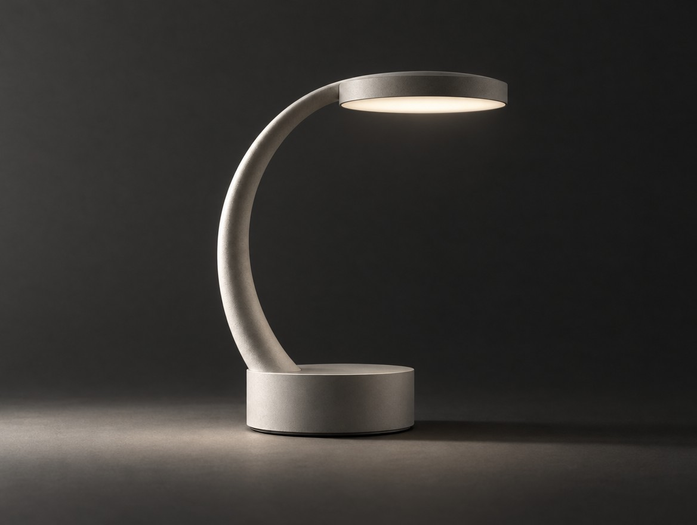
같은 제품, 다른 배경과 조명 — 형태는 동일
PRODUCT INFORMATION
무엇을 만들 것인가?
VISUAL INFORMATION
어떻게 보여줄 것인가?
15
PART 03 — Sketch to Render
DEMO · 강사 시연용 프롬프트
PROMPT EXAMPLE — FULL STRUCTURE
PROMPT · COPY
유지 조건
Use the uploaded rough sketch as the primary design reference.
제품 정의
Create a realistic industrial design visualization of a portable cordless table lamp.
유지 조건
Preserve the original silhouette and major proportions from the sketch.
형태 설명
The product consists of a compact cylindrical base, a single curved support, and a thin circular lamp head.
형태 설명
The curved support must connect continuously from the base to the lamp head.
소재 설명
Use a matte aluminum body with a frosted light diffuser.
이미지 표현
Show the entire product in a three-quarter view against a neutral studio background.
이미지 표현
Use soft diffused lighting to clearly reveal the product's shape and material.
제외 조건
Do not introduce additional arms, buttons, decorative elements, or structural parts that are not present in the original sketch.
제품 정의 · 형태 설명 · 소재 설명 · 이미지 표현 · 유지 조건 · 제외 조건을 구분해서 쓴다.
16
PART 03 — Sketch to Render
핵심 프로세스
GENERATE → REVIEW
01
INPUT →
02
GENERATE →
03
OBSERVE →
04
COMPARE →
05
REVISE
원본 스케치 ↔ 첫 렌더 — 지지대가 두꺼워졌는가?
1
스케치와 같은 제품인가?
2
전체 실루엣이 유지되었는가?
3
주요 부품이 빠지거나 추가되지 않았는가?
4
구조가 자연스럽게 연결되어 있는가?
5
제품의 목적이 이미지에서 읽히는가?
17
Practice 02
First Render
내 스케치로 첫 번째 제품 렌더를 만듭니다.
학생 실습
1. 자신의 스케치를 AI에 업로드
2. 제품 설명 + 이미지 표현 프롬프트 작성
3. 제품 렌더 이미지 생성
4. 원본 스케치와 결과를 나란히 배치
5. 잘 구현된 부분 2개, 잘못 구현된 부분 2개 기록
실습 결과물
Original Sketch + First AI Render
확인 기준
17쪽의 다섯 질문으로 점검
잘된 점 2 · 잘못된 점 2가
구체적인 부위로 적혀 있는가
18
04
Week 01 Online · Reference Directing
REFERENCE IS A DIRECTION
Borrow a quality, not a product.
레퍼런스는 단순히 이미지를 첨부하는 것이 아니라, 어떤 특징을 적용할지 설명하기 위한 자료입니다.
PART 04 — Reference Directing
하나의 레퍼런스에도 여러 정보가 있다
FORM · CMF · DETAIL · CONTEXT
레퍼런스 예시 · 브러시드 알루미늄 미니멀 조명
FORM
전체 형태와 실루엣
알약형 긴 바 실루엣
CMF
색상, 소재, 마감
브러시드 알루미늄 · 반투명 확산판
DETAIL
연결부, 모서리, 버튼, 표면 처리
둥근 끝단 · 얇은 받침 연결부
CONTEXT
사용자와 사용 환경
책상 위 간접 조명
전체를 따라 하지 말고, 필요한 특징만 골라 적용한다.
20
PART 04 — Reference Directing
DEMO · 강사 시연
REFERENCE ≠ COPY
INPUT
REFERENCE
브러시드 알루미늄 · 부드러운 곡면의 미니멀 조명
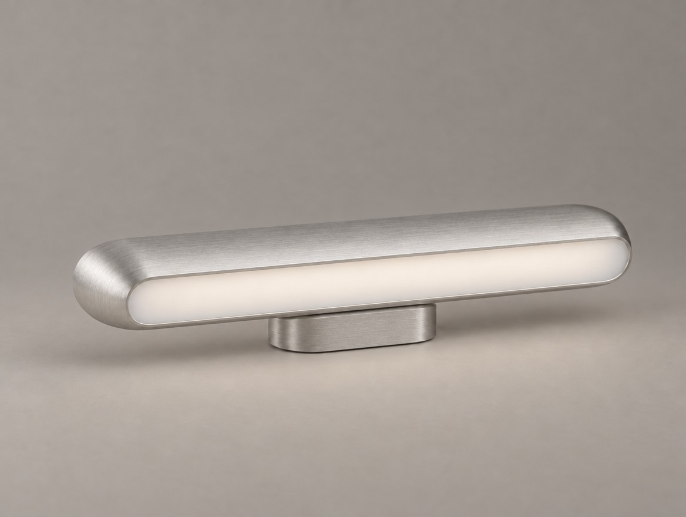
FAIL
COPY THE REFERENCE
레퍼런스의 형태를 그대로 복제 — 원래 스케치가 사라짐
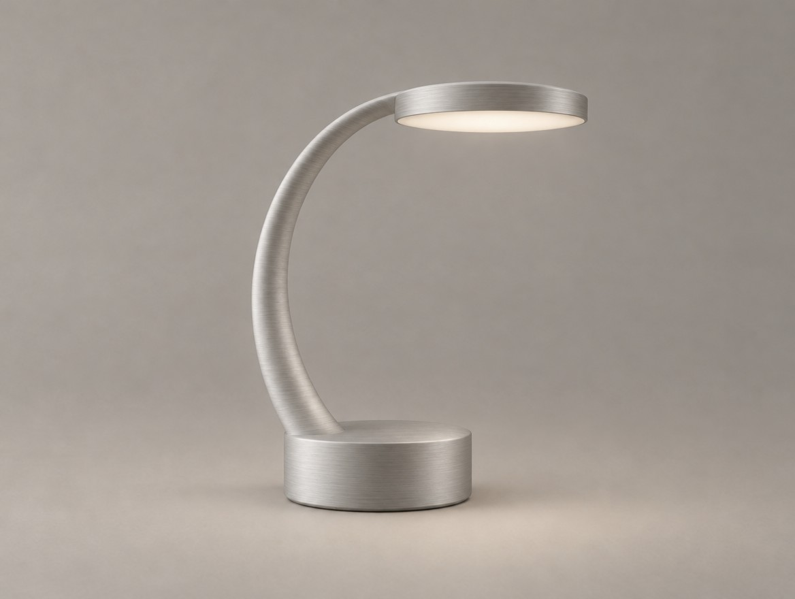
PASS
EXTRACT THE REFERENCE
램프 실루엣은 유지, 알루미늄 마감과 곡면 처리만 반영
21
PART 04 — Reference Directing
레퍼런스를 구체적인 지시로 바꾸기
Borrow · Preserve
BAD · 잘못된 요청
Make it look like this reference.
→ 형태까지 복제된 결과
BETTER · 개선된 요청 · COPY
Keep the original product silhouette and structure.
Apply the brushed aluminum finish from the reference image.
Use a similar soft edge treatment, but do not copy the reference product's overall form.
→ 실루엣 유지, 마감만 반영된 결과
Specify what to borrow. Specify what to preserve.
22
PART 04 — Reference Directing
REFERENCE PRIORITY
What is the primary reference?
PRIMARY Original Sketch
전체 형태와 구조
SECONDARY Material Reference
소재와 마감
TERTIARY Visual Reference
조명과 이미지 표현
여러 장을 입력할 때는 각 이미지의 역할을 지정한다. 형태를 지켜야 한다면 원본 스케치가 가장 중요한 기준이다.
레퍼런스 우선순위나 강도를 조정하는 기능이 있는지는 도구마다 다르다.
23
Practice 03
Apply Your Reference
레퍼런스에서 필요한 특징만 골라 적용합니다.
학생 실습
1. 기존 AI 렌더 이미지 선택
2. 레퍼런스에서 적용할 특징 1~2개 결정
3. 원래 디자인에서 유지할 요소 명시
4. 레퍼런스를 반영한 이미지 생성
5. 적용 전후 비교
결과물
Before / After
Reference Application
확인 질문
레퍼런스의 특징이 반영되면서도
자신의 제품 정체성이
유지되었는가?
24
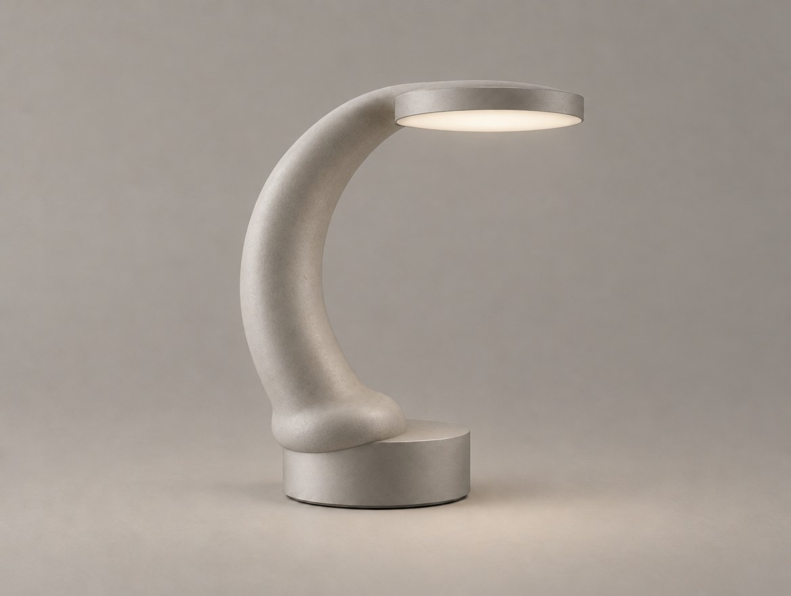
05
Week 01 Online · Image Editing
DIRECT THE CHANGE
Edit what is wrong. Keep what is right.
AI가 만든 결과를 그대로 받아들이지 않고 필요한 부분을 수정합니다.
PART 05 — Image Editing
QUIZ · 무엇이 달라졌나?
AI가 자주 잘못 만드는 부분
기준 제품 · 아래 다섯 장에서 이 제품과 달라진 곳을 찾아보세요.
Q1
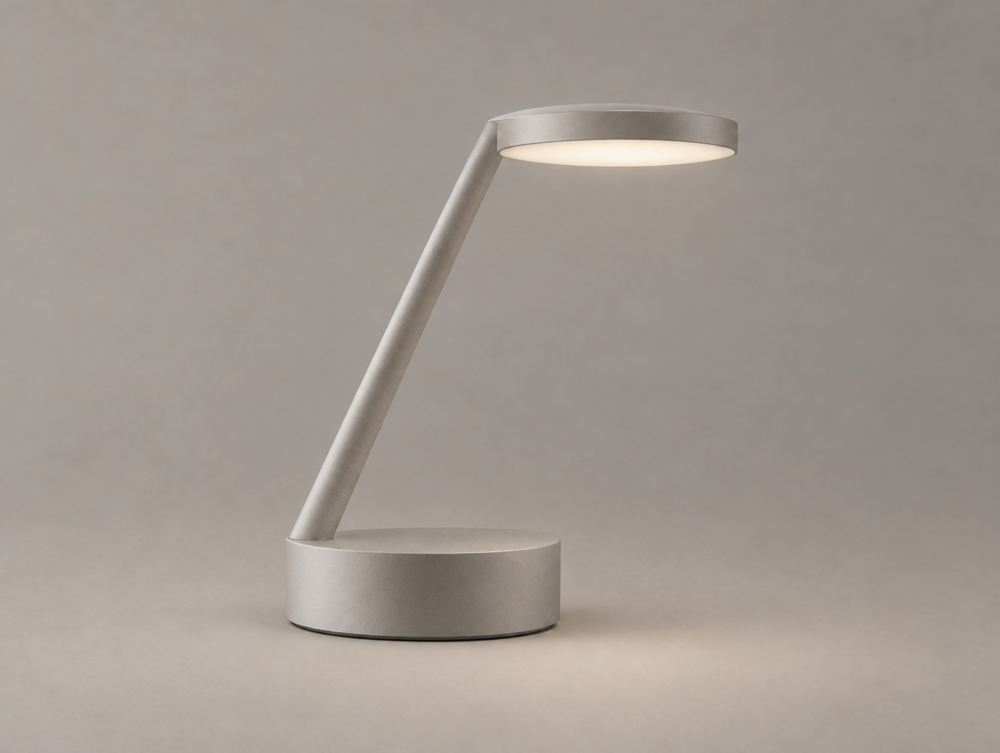
FORM DRIFT
원래 스케치와 다른 형태로 변함 — 곡선 지지대가 직선으로
Q2
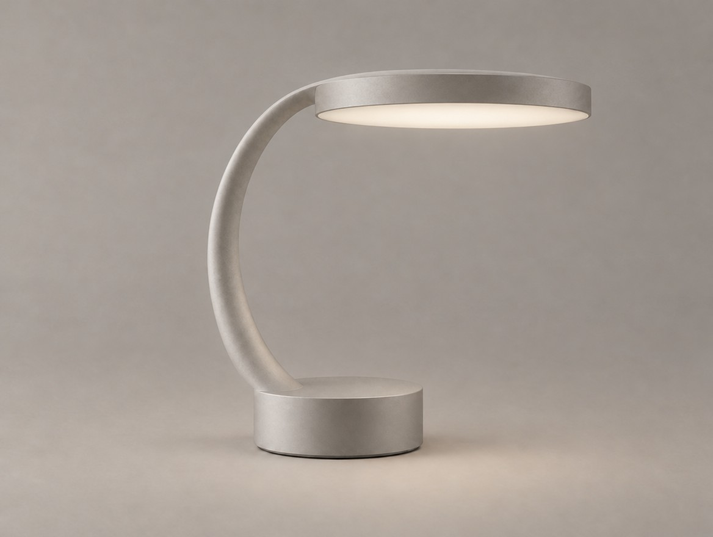
PROPORTION ERROR
부품의 상대적 크기가 달라짐 — 헤드가 과도하게 커짐
Q3
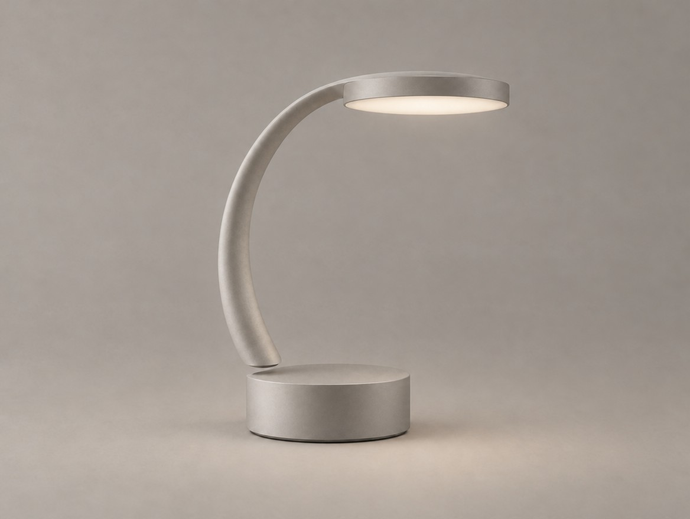
STRUCTURAL ERROR
연결부가 불분명하거나 끊어짐 — 지지대와 베이스 연결
Q4
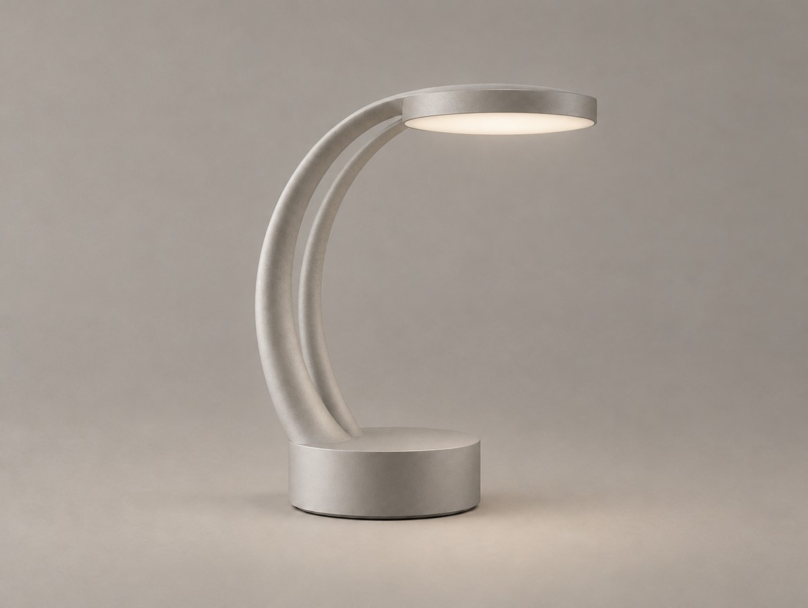
UNWANTED DETAILS
요청하지 않은 부품이 추가됨 — 두 번째 지지대
Q5
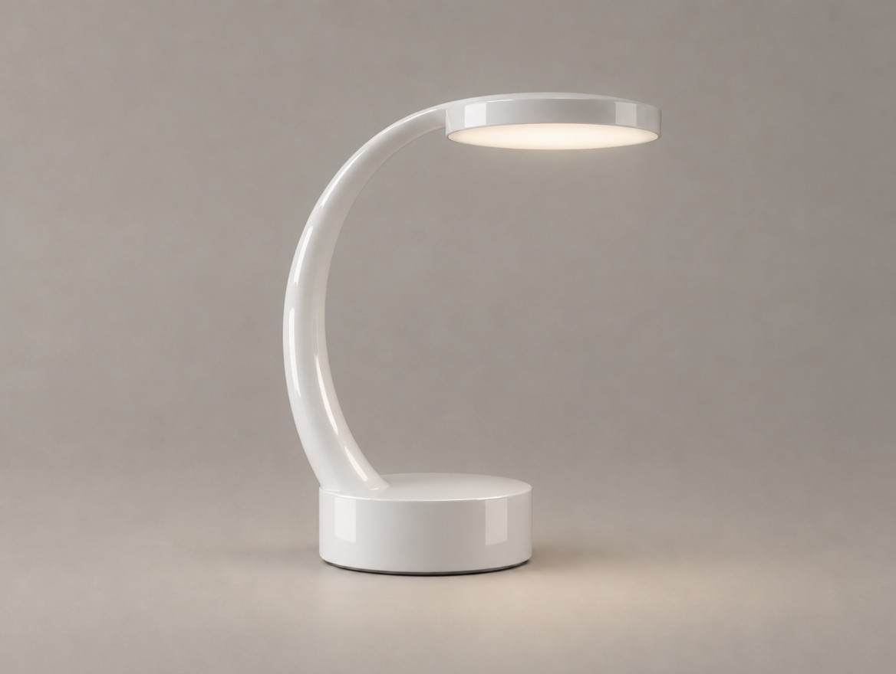
MATERIAL MISMATCH
의도와 다른 소재 — 알루미늄 대신 광택 플라스틱
26
PART 05 — Image Editing
전체 재생성 vs 부분 수정
REGENERATE vs LOCAL EDIT
→

REGENERATE
전체 디자인을 다시 생성하는 방식
장점 새로운 가능성을 탐색하기 쉽다.
한계 기존의 좋은 요소까지 바뀔 수 있다.
→
LOCAL EDIT
특정 영역이나 요소를 중심으로 수정하는 방식
장점 유지할 요소를 보존하면서 수정할 수 있다.
한계 도구에 따라 마스킹이나 선택 영역 편집이 필요할 수 있고, 주변 영역이 함께 변할 수도 있다.
What should change? What should stay?
27
PART 05 — Image Editing
수정 프롬프트 구조
KEEP / CHANGE / AVOID
KEEP
현재 제품의 전체 실루엣, 베이스, 조명 헤드
CHANGE
곡선형 지지대의 두께
AVOID
제품의 높이, 헤드 크기, 소재, 카메라 시점 변경
BEFORE → AFTER · 지지대만 바뀌고 나머지는 유지
EXAMPLE PROMPT · COPY
Keep the existing lamp silhouette, base, and circular lamp head unchanged.
Reduce only the thickness of the curved support to create a lighter visual appearance.
Preserve the original product height, proportions, material, camera angle, and lighting.
Do not add or remove any components.
28
PART 05 — Image Editing
좋은 수정 요청과 나쁜 수정 요청
Describe the problem. Direct the change.
BAD
Make it more elegant.
→
BETTER
Reduce the support thickness while preserving the original curve.
BAD
Fix the proportions.
→
BETTER
Reduce the lamp head diameter slightly while keeping the base width unchanged.
BAD
Make the design more realistic.
→
BETTER
Correct the connection between the curved support and the base so that it appears structurally continuous.
나쁜 요청은 결과의 느낌만 말한다. 좋은 요청은 어느 부위를, 어떻게, 무엇을 유지하며 바꿀지 말한다.
29
PART 05 — Image Editing
DEMO · 강사 시연
BEFORE / AFTER — PARTIAL EDIT
① 지지대 두께
② 베이스 연결부
BEFORE
· 지지대가 지나치게 두꺼움
· 베이스 연결부가 부자연스러움
AFTER
· 지지대 두께 감소
· 연결부 자연스럽게 수정
· 나머지 형태 유지
바꾸지 않은 조건
카메라 시점
소재
배경
조명
헤드 크기
화면 속 제품 크기
완전한 동일성은 보장되지 않는다. 차이가 생기면 기준 이미지로 다시 편집하거나 비교에 맞는 결과를 고른다.
30
Practice 04
Fix Your Design
AI 렌더의 문제를 찾아 구체적으로 수정합니다.
학생 실습
1. 내 AI 렌더에서 문제점 2가지 찾기
2. 문제를 구체적인 문장으로 작성
3. 유지할 요소와 수정할 요소 구분
4. 편집 기능 또는 프롬프트로 수정
5. 수정 전후 비교
제출할 기록
Problem 01 → Editing Instruction → Result
Problem 02 → Editing Instruction → Result
교육 포인트
첫 수정이 원하는 대로 나오지 않아도
조건을 다시 구체화하고 재시도하는
과정 자체가 중요한 실습이다
31
06
Week 01 Online · Concept Exploration
EXPLORE POSSIBILITIES
Same idea, different directions.
같은 아이디어를 어떤 디자인 방향으로 표현할 수 있을까?
PART 06 — Concept Exploration
이번 주와 다음 주의 차이
EXPLORATION vs REFINEMENT
THIS WEEK · WEEK 01
EXPLORATION
디자인 방향의 가능성을 탐색합니다.
Soft & Organic

Geometric & Minimal
Compact & Functional
NEXT WEEK · WEEK 02
REFINEMENT
선택한 방향 안에서 특정 요소를 개선합니다.
지지대 두께 조정
조명 헤드 비율 수정
연결부 개선
Explore directions first. Refine the selected direction later.
33
PART 06 — Concept Exploration
DEMO · 콘셉트 탐색 예시
THREE DESIGN DIRECTIONS
A — SOFT & ORGANIC
부드러운 곡선, 둥근 연결부, 친근한 인상
B — GEOMETRIC & MINIMAL
명확한 기하학적 형태, 단순한 구조, 절제된 인상
C — COMPACT & FUNCTIONAL
작은 공간에 적합한 비례, 기능 중심의 간결한 형태
공통 구성
원통형 베이스 · 지지대 · 조명 헤드 · 휴대용 조명이라는 목적 — 같은 스튜디오, 비슷한 시점
34
Practice 05
Explore Three Concepts
같은 제품 목적으로 세 가지 디자인 방향을 탐색합니다.
학생 실습
1. 탐색할 디자인 방향 3가지 정의
2. 각 방향을 설명하는 키워드 작성
3. 기본 제품 목적과 핵심 기능 유지
4. 방향별 AI 콘셉트 이미지 생성
5. 세 결과를 한 화면에서 비교
결과물
Concept A / Concept B / Concept C
주의사항
AI가 전혀 다른 제품을 만들었다면,
새 콘셉트로 인정하기 전에
원래 Design Brief와 연결되는지 확인
35
07
Week 01 Online · Review & Selection
DON'T CHOOSE THE PRETTIEST.
Choose the most meaningful direction.
이미지의 화려함보다 프로젝트 목표와의 적합성을 우선합니다.
PART 07 — Review & Selection
평가 기준
CONCEPT SELECTION CRITERIA
01
DESIGN GOAL
처음 정의한 문제 해결 방향과 일치하는가?
02
FORM
형태적 특징이 명확한가?
03
FUNCTION
제품의 목적과 기능이 이해되는가?
04
USER
사용자의 요구와 연결되는가?
05
FEASIBILITY
구조와 사용 방식이 어느 정도 설득력 있는가?
06
DEVELOPMENT POTENTIAL
다음 단계에서 발전시킬 가능성이 있는가?
학생 활동
A / B / C 콘셉트의 강점과 우려 사항을 정리합니다.
점수만으로 고르지 않고, 선택 이유를 문장으로 설명합니다.
37
PART 07 — Review & Selection
34쪽의 세 콘셉트를 그대로 비교
CONCEPT COMPARISON BOARD
DIRECTION
A — Soft & Organic
KEY FEATURE
One flowing curve, soft joints
STRENGTH
Friendly silhouette
CONCERN
Unclear structural connection
DIRECTION
B — Geometric & Minimal
KEY FEATURE
Straight column, graphite finish
STRENGTH
Clear structure
CONCERN
Less distinctive identity
DIRECTION
C — Compact & Functional
KEY FEATURE
Low height, accent ring at the head
STRENGTH
Appropriate for small spaces
CONCERN
Limited adjustment range
38
PART 07 — Review & Selection
WEEK 01 — FINAL OUTPUT
CONCEPT VISUALIZATION BOARD
01 DESIGN BRIEF
PRODUCT 휴대용 무선 테이블 램프
USER 작은 공간에서 독서 · 작업
PROBLEM 조명을 옮기기 어렵다
제품 목적 · 사용자 · 해결할 문제
02 ORIGINAL SKETCH
오프라인에서 만든 러프 스케치
03 DESIGN REFERENCES
CMF · 브러시드 알루미늄 마감
04 FIRST AI RENDER
스케치 기반 초기 생성 결과
05 BEFORE / AFTER
지지대 두께 · 연결부 수정
06 CONCEPT A / B / C
Organic · Geometric · Compact
07 SELECTED CONCEPT
C 선택 — 작은 공간 · 휴대 목적에 가장 적합
08 NEXT STEPS
01 헤드 각도 조절 범위 검토
02 포인트 링의 비율과 위치
03 베이스 높이와 무게감
다음 주에 개선할 요소 3가지
39
SELECTED CONCEPT → Refined Concept
NEXT WEEK
WEEK 02 — DEVELOP
From Selected Concept to Refined Concept
다음 주에 다룰 내용
· 선택한 디자인의 형태 분석
· 유지할 요소와 수정할 요소 결정
· 제품 비율 및 구조 개선
· 특정 부위의 Controlled Variation
· 수정 결과 비교
· Refined Concept 완성
This week, we found a direction. Next week, we develop it.
40